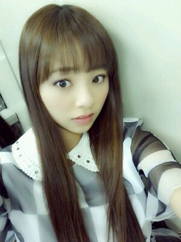

| 2012/12 06 Thu | FNS歌謡祭★せちゃん大好き☆〜s asuke〜 |
前回に引き続き
ポニテろってぃ-♪

今回は、笑ってる
バージョンとゆうことで...(*^^*)
今日12月5日は
畠中のせいらの
17歳お誕生日 ☆キラーン。
何回も言っちゃうけど..
おめでとーう *^^*
せいらにおめでと
MAILしたぉ。(・ω・)/
前回blogに載せた
メンバーの写メの正解は, , ,
手前から、
かずみん→みなみ→生駒ちゃん
→あみ→ひめか→ななせ
でした*´∀`*
どう?
コメント読むと
わりかし皆様
当たってたぁ〜*´ω`*))うい〜
そして今日は
FNS歌謡祭に乃木坂46.も
出演させて頂きましたっ !
今年の代表曲が
『おいでシャンプー』
とゆうことで
『おいでシャンプー』で
出させて頂きました。
おいシャン衣装で
撮った写メ発見 ☆ミ ! !

昨日は、せっちゃん♪と
デートしてきました
(〃ω〃)...にやっ
2人でカラオケってのは
意外と初やったんよね*^^*
それに久々
プリとったよね(・∀・)
あ〜
載せたいけど
載せれなぁ〜い(´`；)
待受画面なうだよん♪
・・・・
最後に、
〜sasuke〜の歌詞を
1フレーズだけでも
いいから書いてほしい。
とゆうコメントがあったので
サビの歌詞を
書かせて頂きます。
〜sasuke〜
向日葵の様な笑顔で
たんぽぽの様な体で
お日さまみたいな暖かい色で
いつでもはげましてくれた。
向日葵の様な笑顔で
どんなに心傷んだ時だって
助けてくれた。
言葉なんか通じ合わなくたって
分かりあえるよ
言葉なんていらないんだよ。
僕と君はずっとずっと
一緒なんだよ。
まひろの愛犬
サスケはブラウン
ポメラニアン。
おやすみなさい...☆
のし。
コメント(158)
2012/12/06 00:18